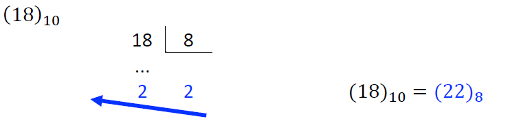
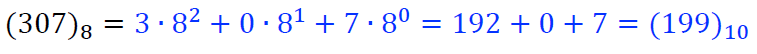
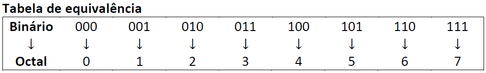
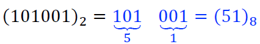
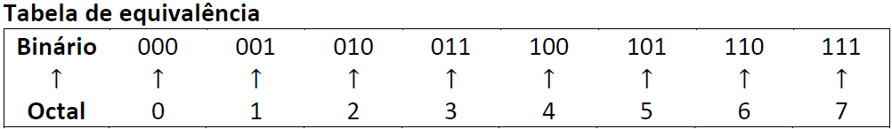
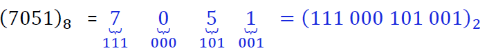

Sistema Octal
O sistema de numeração octal ou de base oito é composto por oito símbolos que representam todos seus números. As combinações de seus algarismos funcionam como nos outros dois sistemas de numeração, após todos os símbolos serem utilizados juntamos o primeiro símbolo com os demais, e assim sucessivamente.
| Decimal |
Octal |
Decimal |
Octal |
Decimal |
Octal |
| 0 |
0 |
11 |
13 |
22 |
26 |
| 1 |
1 |
12 |
14 |
23 |
27 |
| 2 |
2 |
13 |
15 |
24 |
30 |
| 3 |
3 |
14 |
16 |
25 |
31 |
| 4 |
4 |
15 |
17 |
26 |
32 |
| 5 |
5 |
16 |
20 |
27 |
33 |
| 6 |
6 |
17 |
21 |
28 |
34 |
| 7 |
7 |
18 |
22 |
29 |
35 |
| 8 |
10 |
19 |
23 |
30 |
36 |
| 9 |
11 |
20 |
24 |
31 |
37 |
| 10 |
12 |
21 |
25 |
32 |
40 |
Conversão
Base 10 para Base 8:
Para transformar números de base 10 em base 8 é utilizado o mesmo método do sistema de numeração anterior, da seguinte forma
- Dividimos o número decimal por 8 e guardamos o resto;
- Dividimos o quociente por 8 continuamos o processo até não dar mais para realizar divisões;
- O número de base oito vai ser a sequência do último quociente e dos restos das divisões, começando pela direita.

Exemplo retirado do material disponibilizado pela professora Valéria Lessa
Base 8 para Base 10:
Para transformar um número octal em um número decimal devemos fazer multiplicações de cada dígito octal por potências de oito, começando pelo último dígito.

Exemplo retirado do maerial disponibilizado pela professora Valéria Lessa
Base 2 para Base 8:
Por 8 ser uma potência de 2 conseguimos fazer uma conversão rápida e simples de binário para octal (2³), então pode-se dizer que precisamos de três números binários para ser equivalente a um número octal.

Tabela retirada do material disponibilizado pela professora Valéria Lessa
Para convertermos binários para octal devemos realizar os seguintes passos:
- Separar o número binário em grupo de três dígitos, adicionando zeros à esquerda caso necessário.
- A partir da tabela de equivalência transformamos cada grupo em um dígito octal.

Exemplo retirado do material disponibilizado pela professora Valéria Lessa
base 8 para Base 2
É o contrário da conversão de base 2 para base 8.

Tabela retirada do material disponibilizado pela professora Valéria Lessa
A partir da tabela deve-se substituir cada dígito octal pelos dígitos binários equivalentes

Exemplo retirado do material disponibilizado pela professora Valéria Lessa
Voltar a página inicial